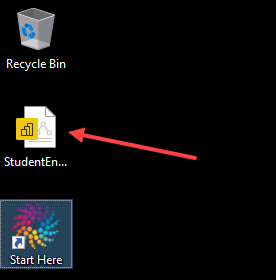

This Virtual Machine Contains the Ed-Fi ODS / API & the Student Engagement Starter Kit
The purpose of this virtual machine is to showcase the Engage Online Learners Starter Kit. The COVID-19 global pandemic has created an unprecedented challenge in measuring and evaluating how engaged students are in their learning - be it remote, in-person, or hybrid. This Starter Kit, leveraging the LMS Toolkit, provides a solution environment in which data from an LMS is collected and combined with student demographic and assessment data from other key systems to help paint a more accurate picture of student engagement.
Ed-Fi Assets and Tools Installed on This Server
Power BI
Open the Student Engagement dashboards in PowerBI by double-clicking on the Student Engagement file on the desktop.
Web Applications
The following URLs will let you access the three web applications from the Ed-Fi Technology Suite:
- Ed-Fi ODS / API Suite 3, version 5.2
- Ed-Fi ODS Admin App for Suite 3, version 2.2
- SwaggerUI for Suite 3, version 5.2
Other Tools
The LMS Toolkit Python packages are in C:\Ed-Fi\LMS-Toolkit-main.
When using the Extractors to pull data from your own instance of Canvas, Google Classroom,
or Schoology, the LMS Toolkit is pre-configured to store and consume CSV files in
C:\Ed-Fi\lms-data.
The Console Bulk Loader executable, used to upload some of the XML sample
data, is located in c:\Ed-Fi\Bulk-Load-Client.
Learn More
For more information on this Starter Kit, including how to interact with the tools installed on this VM, please see:
- Quick Start Guide
- Dashboard Walkthrough
- Setup Guide (for installing this system in your own environment)